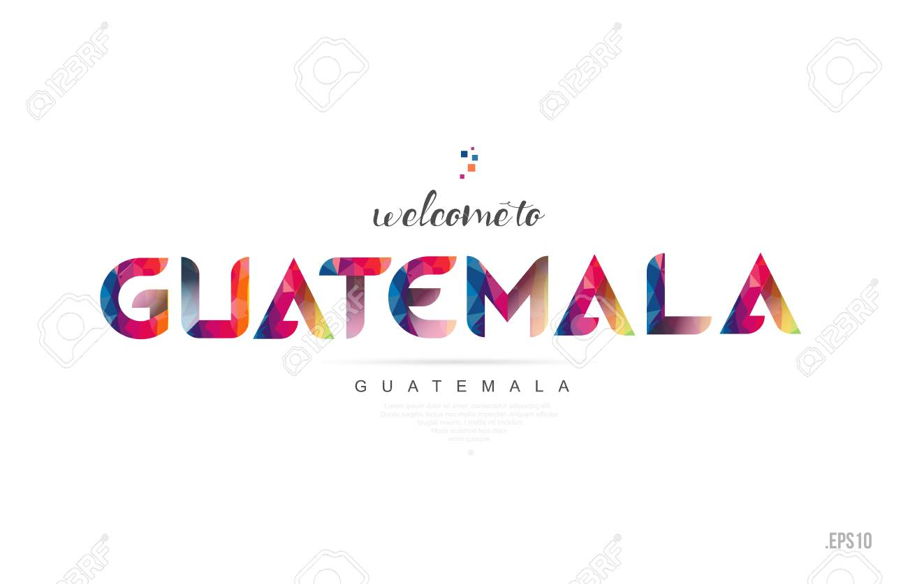

HISTORIA

La historia de Guatemala abarca desde la civilización maya, con su rica cultura y ciudades como Tikal, hasta la conquista española en 1524, que impuso nuevas estructuras sociales y religiosas. Tras independizarse en 1821 y formar parte de la efímera federación centroamericana, el país vivió conflictos entre conservadores y liberales. En el siglo XX, dictaduras, como la de Jorge Ubico, y la Revolución de 1944 marcaron su política. La Guerra Civil (1960-1996) dejó profundas heridas, con más de 200,000 muertos. Los Acuerdos de Paz de 1996 pusieron fin al conflicto, pero Guatemala sigue enfrentando desafíos como la corrupción y la violencia.
SIMBOLOS PATRIOS
los simbolos patrios que posee Guatemala son los siguientes:
Bandera de Guatemala
Es el más antiguo de los símbolos patrios, al pasar de los años ha cambiado varias veces su forma, tamaño, color y escudo.
|

|
Escudo de Guatemala
La versión actual fue creada en 1871, en el gobierno de Miguel García Granados, por el ciudadano suizo Juan Bautista Brener.
|
 > >
|
Ave nacional de GuatemalaEl quetzal, conocido como el ave nacional, de hermoso plumaje, desde 1871. Simboliza la libertad, la autonomía e independencia de la nación. Anida en los bosques nubosos de Guatemala como las Verapaces, mide aproximadamente de 30 a 38 centímetros. El quetzal macho posee larga cola, la cual es importante para el cortejo. |
 |
Flor nacional de Guatemala
La Monja blanca, fue declarada como flor nacional de Guatemala por decreto presidencial del general Jorge Ubico Castañeda el 11 de febrero de 1934.
|

|
Arbol nacional de GuatemalaLa ceiba reconocida como árbol nacional mediante el Acuerdo Gubernativo del 8 de marzo de 1955. El nombre científico es Ceiba pentandra, catalogado como árbol nativo de América. Puede llegar a medir más de 50 metros de altura y su tronco rebasa los 3 metros de diámetro. |

|
Himno Nacional de Guatemala
La letra del himno nacional de Guatemala es original del poeta cubano José Joaquín Palma, y la música fue compuesta por el maestro compositor Rafael Álvarez Ovalle en 1897, con motivo de la realización de la Exposición Centroamericana del gobierno del general José María Reina Barrios.
| Himno de Guatemala |
|
¡Guatemala feliz...! que tus aras |